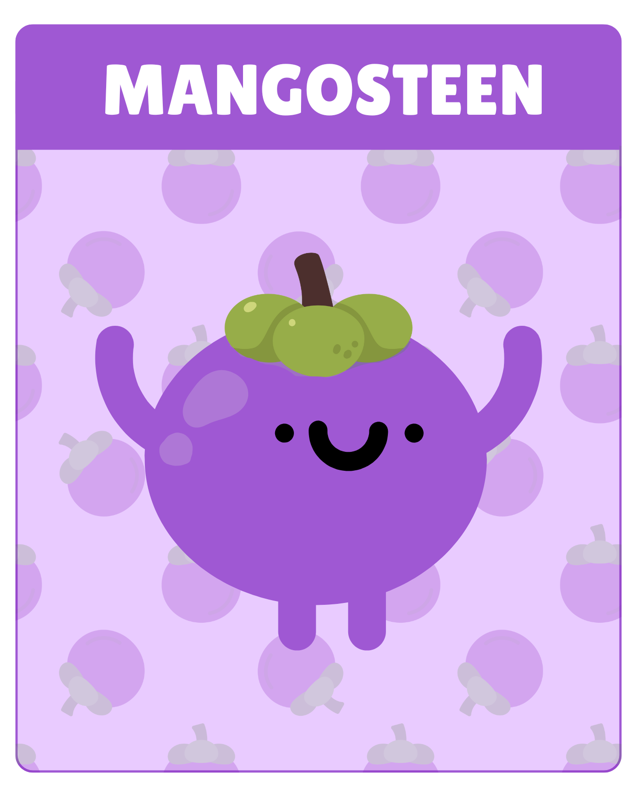
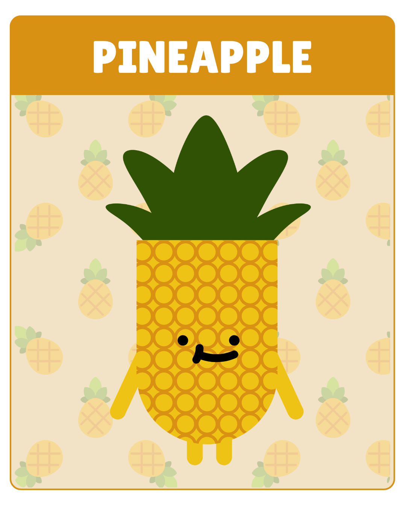
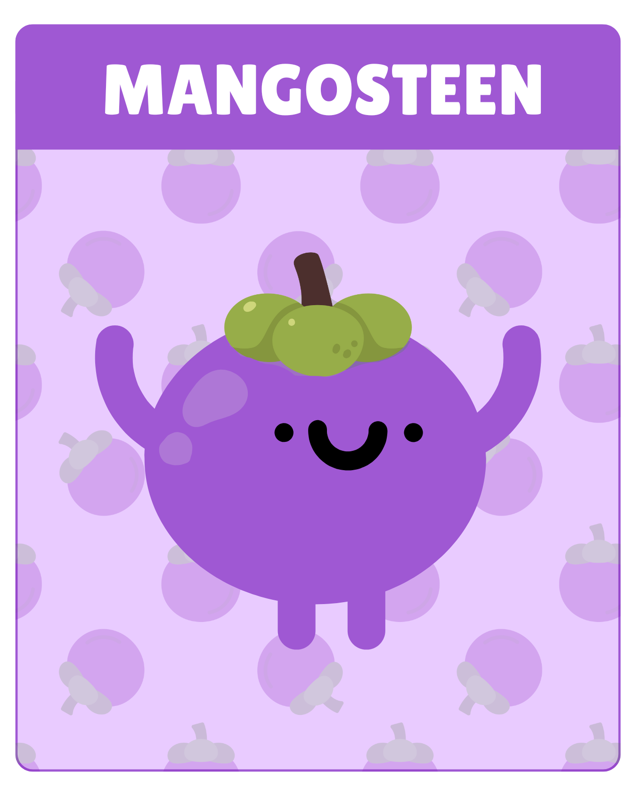
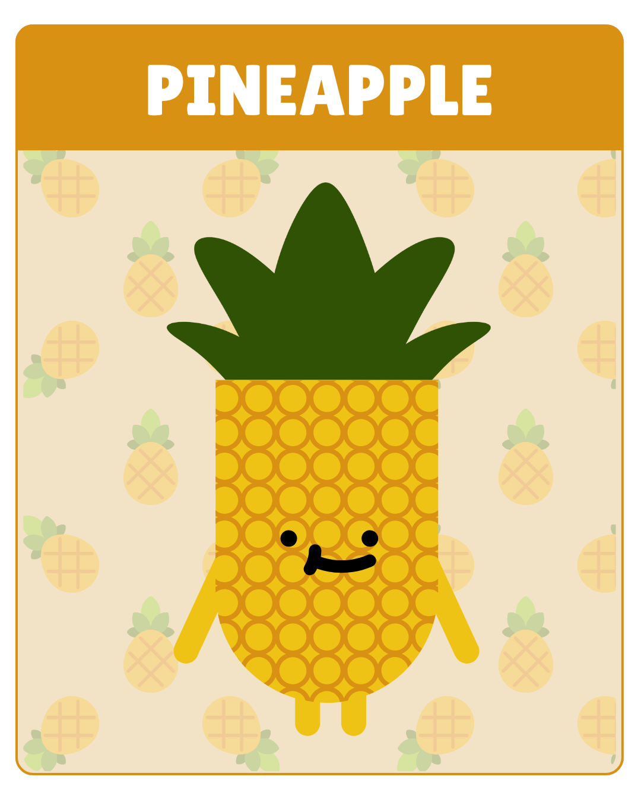

Hành Trình Tình Yêu Trong Vườn Duyên
Trong khu vườn mang tên Vườn Duyên, bạn sẽ trải qua 4 giai đoạn để nuôi lớn hạt giống tình yêu của mình —
từ khi nó vừa được gieo xuống cho đến khi hoa nở rộ. Mỗi giai đoạn là một bước trưởng thành
trong cách bạn yêu, cảm nhận và thấu hiểu chính mình.
Giai đoạn 1: Gieo mầm
Khi trái tim khẽ rung động lần đầu
Tình yêu bắt đầu từ những điều thật nhỏ — một ánh nhìn, một nụ cười, hay cảm giác tim khẽ rung lên.
Đó là khoảnh khắc ta lặng lẽ gieo những hạt giống đầu tiên của thương nhớ, để rồi chờ ngày nảy nở thành cảm xúc.
Giai đoạn 2: Ươm mầm
Khi yêu thương lớn dần
Tình yêu lớn dần qua quan tâm và sẻ chia, qua những điều giản dị mà chân thành.
Mỗi lời nói dịu dàng, mỗi hành động ấm áp như giọt nước lành nuôi dưỡng mầm yêu trong tim.
Giai đoạn 3: Ra hoa
Khi tình cảm trở nên rực rỡ
Khi cảm xúc đã đủ đầy, tình yêu bung nở như những cánh hoa đầu mùa.
Ta bắt đầu sống thật với chính mình — ấm áp, sâu sắc, lãng mạn và tràn đầy sức sống.
Giai đoạn 4: Kết trái
Khi tình yêu trưởng thành
Sau bao mùa vun trồng, tình yêu trở thành trái ngọt của niềm tin và đồng hành.
Đó là lúc ta hiểu rằng yêu thương không chỉ là cảm xúc, mà còn là sự gắn bó dịu dàng theo năm tháng.
Tình yêu muôn hình vạn trạng. Mỗi người yêu và được yêu theo những cách khác nhau, ngọt ngào, tươi mới hay sâu sắc, lãng mạn. Còn bạn, bạn thể hiện tình yêu bằng cách nào, cảm xúc bạn mang lại trong tình yêu ra sao?
 


